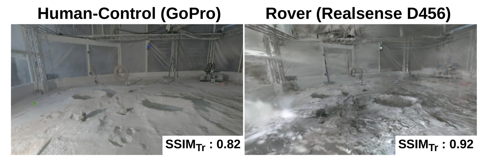
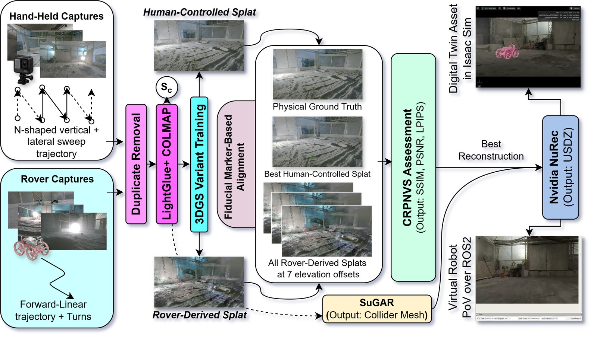
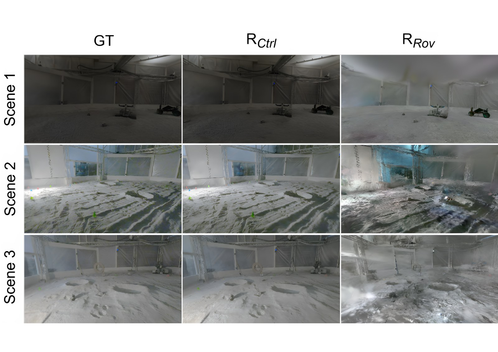
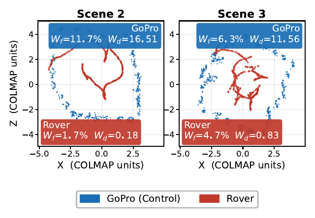

International Conference on Space Robotics (iSpaRo) 2026
* Corresponding author
1Dept. of Mechanical Engineering, Colorado School of Mines
2Dept. of Electrical Engineering, Colorado School of Mines
In this paper, we present a reconstruction pipeline that empirically quantifies the photorealistic scene reconstruction accuracy from both human-controlled and rover mast camera monocular feeds against physical ground truth as a function of Lunar traversal effects (e.g., motion blur, haze due to lofted regolith, trajectory bias, sparse views). First, we benchmark six variants of 3D Gaussian Splatting (3DGS) across three Lunar analog scenes on held-out test sets using standard photometric metrics. We then establish how under traversal effects, this test-set-specific Novel View Synthesis (NVS) performance does not proportionally scale to the same photometric metrics in the reconstructed DTs.
Our results quantify that splat training metrics alone are insufficient predictors of Cross-Reconstruction Photorealistic NVS Fidelity (CRPNVS), and that factors such as rover trajectory bias and geometric scene coverage play a critical role in determining the photorealistic quality of the reconstructed scenes targeting Lunar analog Digital Twins. Additionally, we pilot study Coverage Score (Sc), a geometry-based diagnostic derived from COLMAP poses and point cloud structure that provides a meaningful heuristic about the highest achievable CRPNVS structural fidelity, independently of splat training performance in the absence of a human-controlled reference.
These findings establish a standardized, human control-referenced evaluation pipeline for photorealistic scene reconstruction for Lunar-analog Digital Twin development and future planetary exploration.




@inproceedings{mazumder2026lunarcrpnvs,
author = {Mazumder, Antar and Hartzell, Ryan and Boyd, Luke and
Robinson, Alex and Sharma, Neha and Carnival, Chance and
Zhu, Frances},
title = {A Reproducible Reconstruction and Evaluation Framework for
Photorealistic Lunar Analog Scene Reconstruction Toward
Digital Twins},
booktitle = {International Conference on Space Robotics (iSpaRo)},
year = {2026}
}